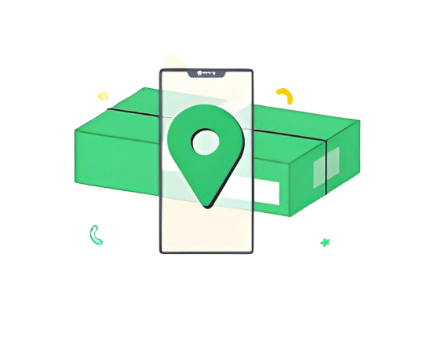

Veja como o Rastreio Xpress pode facilitar sua rotina
As funcionalidades do Rastreio Xpress foram desenvolvidas para ajudar você a organizar a rotina logística.
Busque por uma encomenda
Use o Rastreio Xpress para encontrar suas encomendas. Basta colar o código de rastreio no campo de buscas e aproveitar.

Acompanhe suas encomendas
O Rastreio Xpress foi desenvolvido para facilitar a visualização de suas encomendas.
Receba notificações
No Rastreio Xpress você acompanha tudo o que acontece com sua encomenda diretamente no seu e-mail.